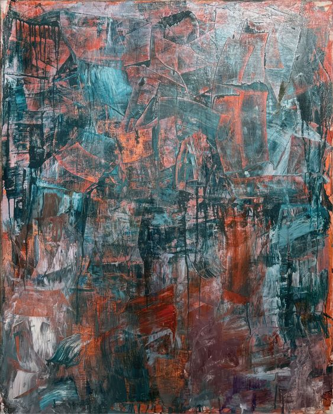
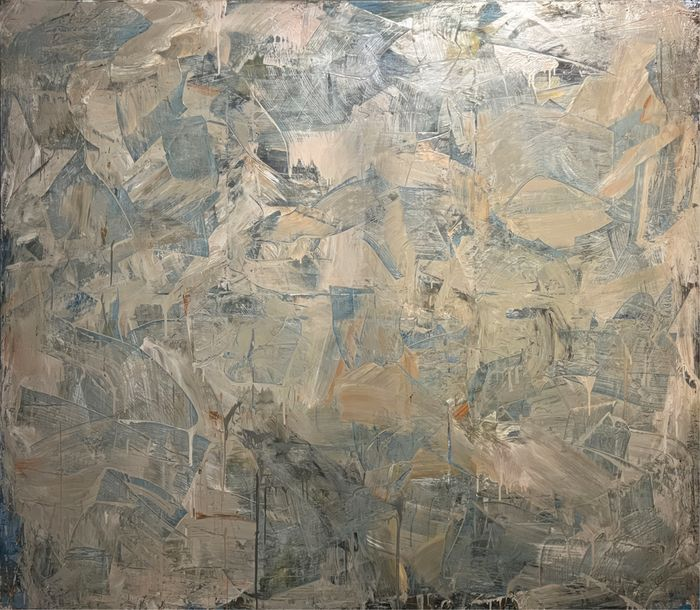
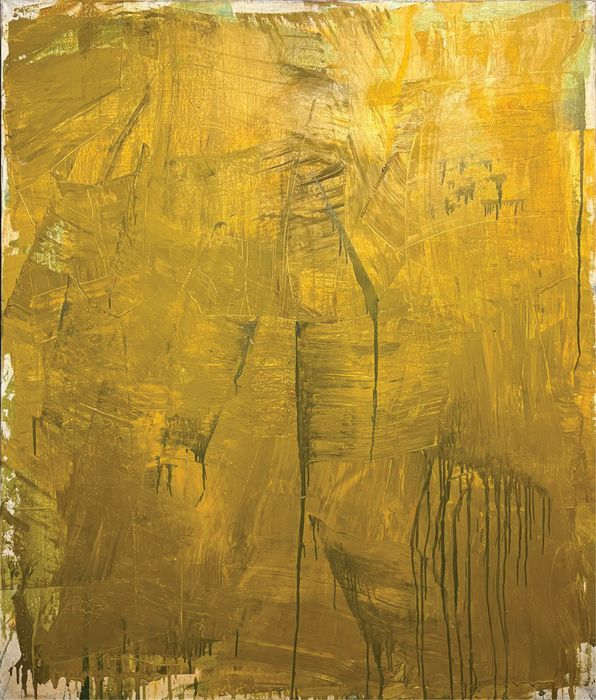
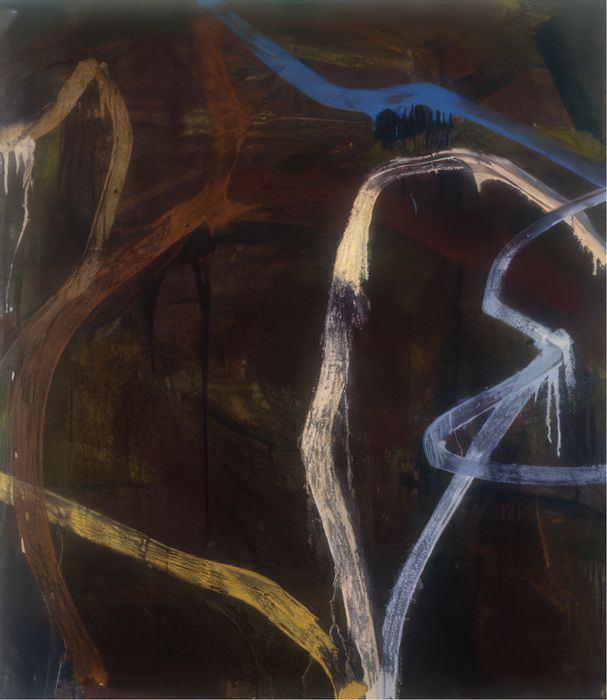
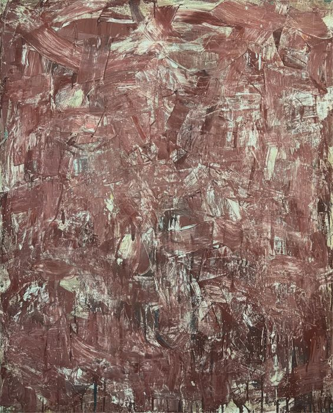
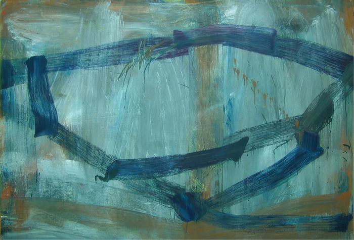
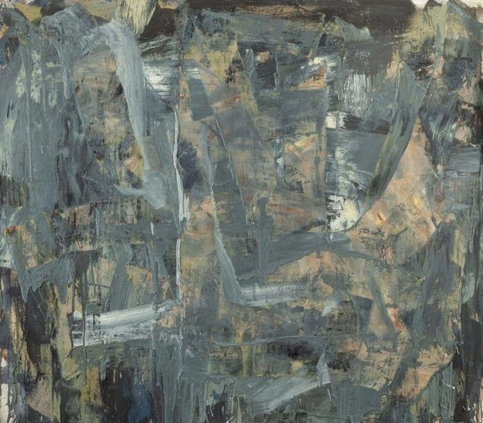
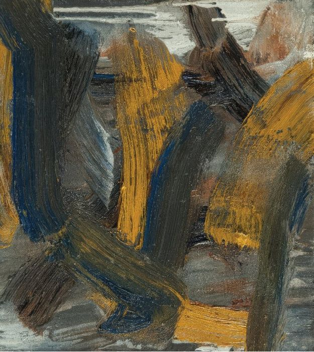
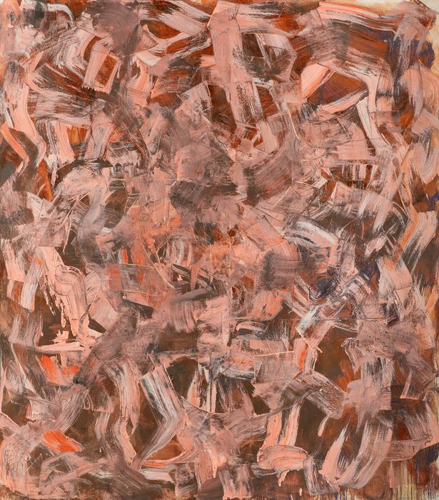

Painter · Oil on linen · New York
Large oil paintings built from color and light, made through scraping, sanding and repeated passes of pigment.
The paintings refer to psychological states of being, and those states follow time of day, weather and season.
Saltz builds color and light by repetition. He scrapes, power sands and moves pigment across the surface. The paint is mulled in his own studio and suspended in linseed oil or alkyd resin.
The works are made at the scale of a person, big enough to step into. Finished paintings rarely come out in sequence. They can hang alone, or in groups that change how a room feels.
Select a work to view it larger. Use the arrows, the keyboard, or swipe to move between works. Sizes in inches, as listed in each file name.









| # | Cat. no. | Year | Medium | Size (in) |
|---|---|---|---|---|
| 1 | MS147 | 2022 | Oil on linen | – |
| 2 | MS146 | 2022 | Oil on linen | – |
| 3 | MS148 | 2022 | Non-objective; oil, alkyd resin, pigment, pre-mulled paint on linen | 57 × 49 |
| 4 | – | 2023 | Non-objective; oil, dry pigment, alkyd resin on linen | 59 × 47 |
| 5 | – | 1992 | Non-objective; oil, alkyd resin, pigment, pre-mulled paint on linen | 49 × 42.5 |
| 6 | MS149 | 2022 | Non-objective; oil, alkyd resin, pigment, pre-mulled paint on linen | – |
| 7 | – | 2005 | Non-objective; oil, alkyd resin, pigment, pre-mulled paint on linen | 44 × 62 |
| 8 | MS112 | 2023 | Oil, alkyd resin, pigment, pre-mulled paint on linen | 63 × 75 |
| 9 | MS097 | 2017 | Non-objective; oil, alkyd resin, pigment, pre-mulled paint on linen | 63 × 75 |
| 10 | – | 2021 | Non-objective; oil, alkyd resin, pigment, pre-mulled paint on linen | 60 × 50 |